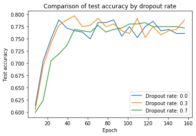

Natural Language Processing - Sentiment Analysis
We investigated how different Natural Language Processing (NLP) techniques could be used to perform sentiment analysis on real user generated text data from the Sentiment140 dataset [1]. First we investigated an LSTM model before deciding on using the self-attention network code from [2] because of the possible speed and accuracy advantages. Our contributions included investigating how the training batch size and dropout rate affected the accuracy of the model and validating an existing model by reproducing it and using it with a different dataset. After tuning the model with a smaller version of the dataset we trained it on 160,000 tweets. When we tested our model on the test dataset, we achieved an accuracy around 80%.
The code and final report are available on Github:
https://github.com/yamierick/sentiment-analysis
Key Image
